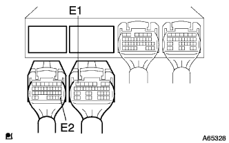
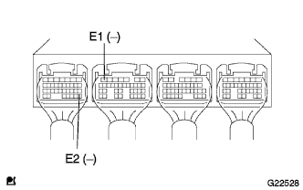
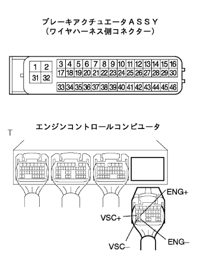
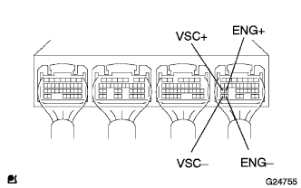
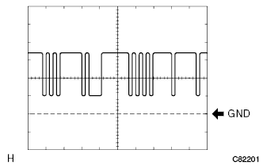
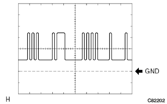
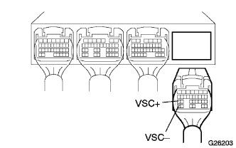

DTC C1203/53 エンジンECU通信線異常 |
| DTC Ｎｏ. | DTC検出条件 | DTC出力関連項目 |
|---|---|---|
| Ｃ１２０３/５３ |
|
|
| 手順1 | ワイヤハーネス点検 |
IG OFFで、エンジンコントロールコンピュータASSYのコネクタAとBを切り離す。
|  |
SST（トヨタエレクトリカルテスター）を使用して、エンジンコントロールコンピュータASSYのB7（E1）、A28（E2）端子とボデーアースの導通を点検する。
IG OFFで、エンジンコントロールコンピュータASSYのコネクタAおよびBを接続する。
|  |
エンジンを始動し、SST（トヨタエレクトリカルテスター）を使用してエンジンコントロールコンピュータASSYのB7（E1）、A28（E2）端子とボデーアースの導通を点検する。
|
| ||||
| OK | |
| 手順2 | ワイヤハーネス点検 |
|  |
ブレーキアクチュエータASSYおよびエンジンコントロールコンピユータASSYのコネクタを切り離す。
コネクタのケースおよび端子に変形、腐蝕がないことを点検する。
SST（トヨタエレクトリカルテスター）を使用して、ブレーキアクチュエータASSY←→エンジンコントロールコンピユータASSYの端子間ワイヤハーネスの導通およびボデーアースとの絶縁を点検する。
| 測定端子[アクチュエータ←→E/G ECU] | 基 準 |
|---|---|
| 9（ENG+）←→D24（ENG+） 23（ENG-）←→D30（ENG-） 8（TRC+）←→D25（VSC+） 22（TRC-）←→D31（VSC-） | 導通あり |
SST（トヨタエレクトリカルテスター）を使用して、ブレーキアクチュエータASSYおよびエンジンコントロールコンピユータASSYの各端子とボデーアースとの絶縁を点検する。
| 点検端子[ブレーキアクチュエータ] | 点検端子[エンジンコントロールコンピュータ] | 基 準 |
|---|---|---|
| 9（ENG＋），23（ENG-），8（TRC＋），22（TRC-）←→ボデーアース | D24（ENG＋），D30（ENG－），D25（VSC＋），D31（VSC-）←→ボデーアース | 導通なし |
|
| ||||
| OK | |
| 手順3 | エンジンコントロール コンピュータ点検 |
|  |
オシロスコープを使用して、エンジンコントロールコンピュータのD24（ENG＋）←→GND、D25（VSC＋）←→GND端子間の波形を点検する。
オシロスコープを使用して、エンジンコントロールコンピュータのD30（ENG－）←→GND、D31（VSC－）←→GND端子間の波形を点検する。
|  |
オシロスコープ波形（ENG＋、VSC＋）
|  |
オシロスコープ波形（ENG－、VSC－）
| A | どちらの波形とも正常 |
| B | VSC＋またはVSC-の波形が異常 |
| C | ENG＋またはENG-の波形が異常 |
|
| ||||
|
| ||||
| A | ||
| ||
| 手順4 | エンジンコントロール コンピュータ点検 |
IG OFFでエンジンコントロールコンピュータのコネクタDを切り離す。
|  |
オシロスコープを使用して、エンジンコントロールコンピュータのD25（VSC＋）←→GND端子間の波形を点検する。
オシロスコープを使用して、エンジンコントロールコンピュータのD31（VSC－）←→GND端子間の波形を点検する。
オシロスコープ波形（VSC＋）
オシロスコープ波形（VSC-）
|
| ||||
| OK | ||
| ||
| 手順5 | ブレーキ アクチュエータASSY点検 |
IG OFFでブレーキアクチュエータのコネクタを切り離す
 |
オシロスコープを使用して、ブレーキアクチュエータワイヤの9（ENG＋）←→GND端子間の波形を点検する。
オシロスコープを使用して、ブレーキアクチュエータワイヤの23（ENG-）←→GND端子間の波形を点検する。
オシロスコープ波形（ENG＋）
オシロスコープ波形（ENG-）
|
| ||||
| OK | ||
| ||